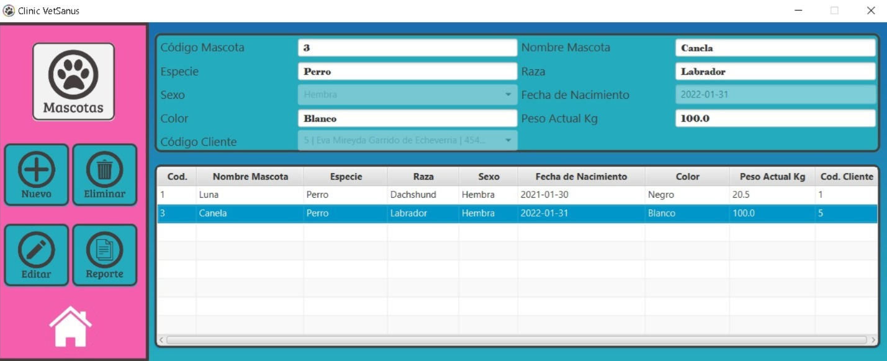
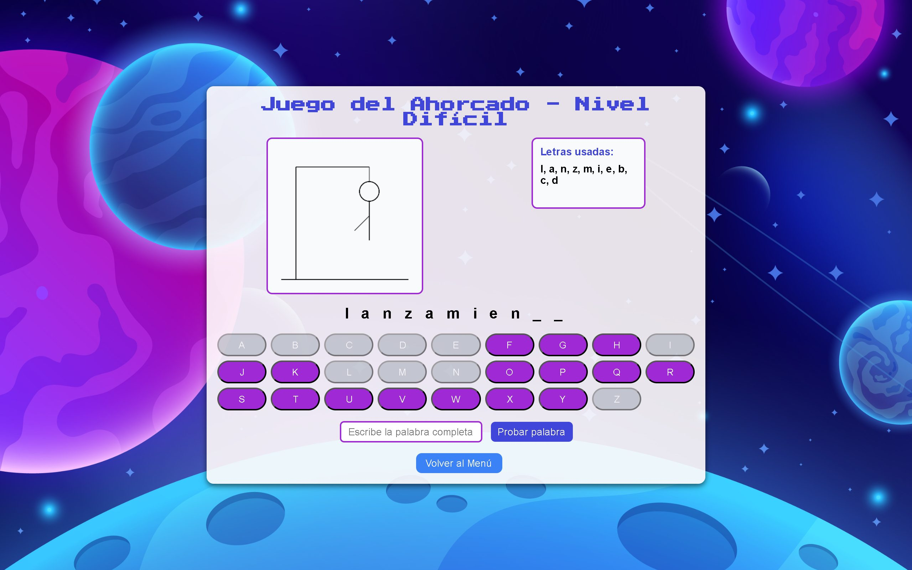

Lenguajes
Java
JavaScript
C#
Desarrollador Full Stack
Transformo ideas en aplicaciones completas, desde el diseño de la base de datos hasta una experiencia de usuario intuitiva.
Sobre mí
Soy Alejandro Echeverría Garrido, Perito en Computación y desarrollador con enfoque Full Stack. Me apasiona participar en todas las etapas del desarrollo de software, desde el diseño de bases de datos y la lógica del servidor hasta la creación de interfaces intuitivas y funcionales.
En proyectos académicos he desempeñado el rol de Scrum Master, coordinando equipos, organizando tareas y fomentando una comunicación efectiva para alcanzar los objetivos del proyecto.
Busco sumarme a un equipo donde pueda construir soluciones de calidad y seguir creciendo profesionalmente como desarrollador Full Stack.
Stack técnico
Las tecnologías con las que trabajo, organizadas por área.
Recorrido
Formación y experiencia en una misma línea de tiempo.
Centro Educativo Técnico Laboral KINAL
Carrera de Perito en Informática: formación técnica en desarrollo de software, bases de datos, desarrollo web, algoritmos y buenas prácticas de programación. Graduado en 2026.
NexusBank y Gestor de Tienda de Videojuegos
Lideré equipos de desarrollo en dos proyectos académicos aplicando la metodología Scrum. Coordiné la planificación del trabajo, facilité las ceremonias y di seguimiento al backlog, promoviendo la comunicación entre los integrantes.
Proyectos académicos y personales
Desarrollo aplicaciones Full Stack utilizando Java, JavaScript, C#, Node.js, .NET y React, integrando bases de datos relacionales y NoSQL, control de versiones con Git y contenedores con Docker.
Trabajo seleccionado
Una selección de sistemas full stack donde participé en arquitectura, desarrollo y coordinación de equipo.
Proyecto social: digitalizamos una veterinaria real que trabajaba con hojas de cálculo. Cuatro microservicios, panel web y app móvil en uso. Desarrollé el servicio clínico, el que más lógica cruzada tiene con los demás.
Sistema web en Java (MVC) para gestionar el catálogo, las ventas, los clientes y los proveedores de una tienda de videojuegos. Coordiné el equipo como Scrum Master.
Ver caso
Aplicación de escritorio (Java + JavaFX) para gestionar pacientes, citas, historiales y facturación de una clínica veterinaria.
Ver caso

NexusBank: cuatro microservicios, panel web y app móvil, con contabilidad por doble partida y desplegado en producción. Coordiné el equipo como Scrum Master y desarrollé dos de los servicios.
Contacto
Estoy disponible para nuevas oportunidades como desarrollador Full Stack. Escríbeme y te responderé lo antes posible.